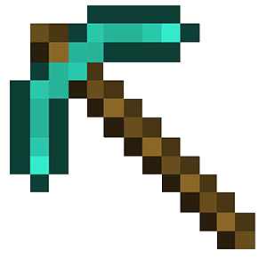

Web Styleguides
7/1/2014 – Yann Gouffon and Marc Friederich
Antistatique is an agency providing web solutions
You might have
a communication problem
 Source : http://www.smashingmagazine.com/2011/05/13/two-cats-in-a-sack-designer-developer-discord/
Source : http://www.smashingmagazine.com/2011/05/13/two-cats-in-a-sack-designer-developer-discord/
A project is a discussion
Documentation and deliverables help framing this discussion
What is a styleguide (CICD)
- Logo
- Colors
- Fonts
- Copywriting, guidelines
- Tone of voice (voiceandtone.com)
- Illustrations, icons
- Photographies
And a web styleguide ?
- Design pattern
- RWD behaviors
- Browser behaviors
- ...
Welcome to the world of dynamic styleguides
Generated from the code
Like JavaDoc, PHPDoc, ...
/*
# Button
````
Action
````
*/
.btn{
color: green;
}
Benefits
- Force you to think by reusable modules
- Better communication between designers and developers
- Living documentation
- RWD testing platform
- A better web !
Case study
Derham – First version
Without web styleguides
- 6 developers
- New to LESS
- More than 9000 lines of CSS
- Dead code
ul.nav-main .nav-sub .nav-sub-top, ul.nav-language .nav-sub .nav-sub-top {}
Second version
With a web styleguides
- OOCSS and LESS experts
- Dynamic style guide first
- Living documentation
- Designer review
- Less work for frontend developers
YSS
Web styleguides generator
Existing tools
KSS (http://warpspire.com/kss/)
StyleDocco (http://jacobrask.github.io/styledocco/)

Pears (http://pea.rs)
Kalei Styleguide (http://warpspire.com/kss/)
No perfect tool
-> So I had to create one

- Markdown syntax
- RWD ready
- Dynamic navigation
- Good looking
/*
# Text components
## Titles
````
My title number 1
My title number 2
My title number 3
My title number 4
My title number 5
My title number 6
````
*/
h1, h2, h3, h4, h5, h6 {
color: #262626;
font-weight: 700;
}
DEMO
It’s all about documentation … so it’s all about communication
CSS the right way!
Questions ?
Find this presentation on slidedeck.io/antistatique or antistatique.github.io/slides-styleguide
Ressources
- “The Smashing Book #4: New Perspectives on Web Design.” Modern CSS Architecture and Front-End Development by Harry Roberts
- 24ways - front-end style guides
- KSS and Kneath
- Slides Frontend documentation engine
- Slides Documenting your CSS using KSS